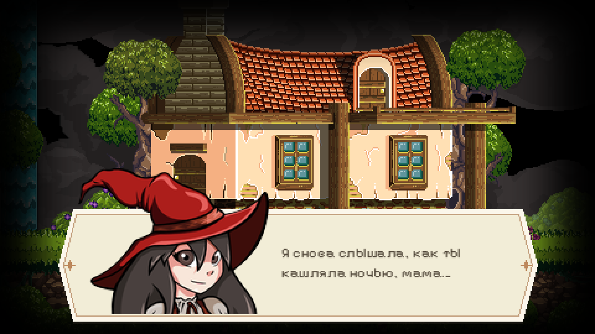
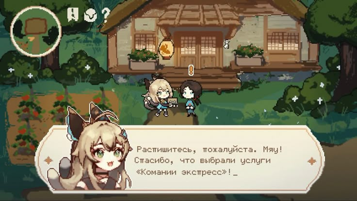

Привет! Это твоё рабочее место
Здесь всё для работы над портретами героев Catmaze: что за проект, герои и их брифы, наши черновики, трекер, чек-лист и общая папка с файлами.
- Героев
- 26
- Бюстов
- 103
- Принято
- 0

О проекте
Что за игра, что рисуем и как выглядит портрет в окне.
02Брифы и задачи
Кто такой герой, как выглядит, наши черновики и список того, что нарисовать.
★Вайб
Черновики, в которых лучше всего видно нужное настроение.
03Трекер
Что в работе, что на проверке и что уже принято.
04Чек-лист
С чего начать и что проверить перед загрузкой арта.
05Файлы
Мои черновики, твои наброски и чистовики, оригиналы из игры.
06Условия и связь
Как используются арты и как со мной связаться.
Что за игра и что мы делаем
Catmaze вышла в 2018 году. Это метроидвания по славянским мифам: юная ведьма Алеста ищет дорогу в Навь, мир мёртвых, чтобы спасти больную маму. По пути она встречает Ворониху, Кикимору, Лихо, Кота Баюна и ещё два десятка героев.
Всю игру, кроме музыки, сделал один человек, Слава Грис: код, уровни, спрайты и портреты. Она вышла в Steam, а потом на Switch, PlayStation и Xbox.
Я делаю к ней фанатский мод: новое окно диалога, звуки и новые портреты героев. Портреты игрок видит в каждом разговоре, а реплик в игре почти 1 900.
Портреты героев
Базовый бюст каждого героя и его ключевые эмоции по брифу.
Всё остальное
- Брифы, задачи и черновые варианты
- Окно диалога и обводка портретов
- Звуки, код, проверка в игре, сборка и релиз
Бюст в окне диалога
В оригинале герои нарисованы почти в полный рост и стоят по краям экрана. В моде будет крупный портрет по грудь прямо в окне реплики, как на референсе.

Голова, плечи и грудь. Ниже груди рисовать не нужно, окно всё равно это закроет.
Верх целиком. Шляпа, рога и уши рисуются полностью: портрет выступает над окном.
Одна эмоция = один бюст. Меняется лицо, иногда наклон головы или плечи.
Маленький размер на экране. В игре портрет около 130 пикселей в высоту, поэтому лицо и эмоция должны читаться крупно и просто.
Героя узнают с первого взгляда. Цвета, силуэт и характер берём из оригинала, мелкие детали и тени упрощаем.
Светлую обводку не рисуй. Обводку по силуэту, как на референсе, я добавлю сама в игре.
Что нужно нарисовать
Пока только портреты: базовый бюст каждого героя и его ключевые эмоции. Для трёх героев сначала ищем новый образ.
- Бриф
- Набросок в папку
- Мой комментарий
- Чистовик
- Проверяю в игре
- Правки
- Принято
Требования к файлам
Если что-то неудобно или не получается в таком виде, напиши, найдём вариант.
PNG с прозрачным фоном и исходник PSD, KRA или CLIP с подписанными слоями.
1200×1000 пикселей, у всех героев одинаковый. Если шляпа или рога не помещаются, холст можно расширить, но масштаб героя не меняй.
Глаза, брови и рот на отдельных слоях: так эмоции рисуются поверх одного бюста.
Лицо в три четверти, взгляд в сторону текста реплики.
Латинское имя героя и код из брифа: alesta_N.png. После кода можно дописать что угодно: alesta_N_v2.png.
Уменьши рисунок до 130 пикселей в высоту. Если эмоцию всё ещё видно, всё хорошо.
Бриф на каждого героя
Кто такой герой, как он выглядит, что сохранить, наши черновики и какие эмоции нарисовать. Сюжет спрятан под спойлер, но в описаниях эмоций бывают лёгкие подсказки.
Какое настроение мне нужно
Здесь собраны черновики, где лучше всего видно, к чему мы идём. Смотри на настроение, характер и подачу, а не на мелкие детали. У некоторых есть моя заметка, почему они попали сюда.
Режим правки. Открывай брифы героев и нажимай ☆ на картинках с нужным вайбом. В окне просмотра можно дописать заметку. Всё сразу сохраняется в файл vibe.js и само уходит на сайт.
Как идут дела
Трекер обновляется сам по файлам в общей папке. Загрузила набросок в «Работы художницы», и задача уходит на проверку. Я переношу файл в «Принято», и задача готова.
Ничего не забыть
Галочки сохраняются в этом браузере.
Общая папка
Все файлы лежат в общей папке на Яндекс Диске. Загружай наброски и чистовики в «Работы художницы», здесь они появятся сами.
Как используются арты
Арты рисуются для мода
Принятые работы входят в мод и остаются в нём, в том числе в обновлениях.
Имя в титрах
В титрах мода укажу, кто рисовал: по имени или по нику, как скажешь.
Портфолио
Показывать работы в портфолио и соцсетях можно.
Мод неофициальный
Я делаю его по фану, для игроков он бесплатный. Персонажи и мир Catmaze принадлежат Славе Грису.
Если что-то непонятно
Пиши в любой момент: по брифу, по срокам, если что-то не получается или хочется предложить своё.
Можно встретиться и поговорить вживую за кофе.